釣行日誌 ＮＺ編 「一期一会の旅：A Sentimental Journey」
懐かしのトロレイ一家との再会
11/21(WED)-2
ホキティカ行きの機内はさすがに地元のキウィっぽい人たちが多く、ウェストコーストの皆さんらしいくだけた会話が飛び交っていた。
天気は快晴。離陸して空港近くの牧草地を飛び越えて行くとアルプスの山並みが眼下に広がり、蛇行して流れる山岳渓流がいくつも見えた。いかにも鱒の棲みそうな流れだったが、ヘリコプターではないので魚影までは見えなかった。（笑）
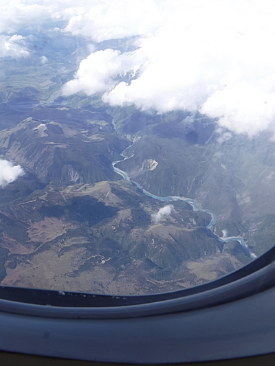
途中、徐々に降下して行く機体から、小さな湖が間近に見えて懐かしかった。前回の釣行でブリントさんが奥さんのグレースさんと僕を連れて行ってくれた湖を、あれから何回もオンラインマップで場所を探し、とうとう特徴ある湖の形を見つけて覚えていたのですぐに判った。続いてホキティカの北を流れるタラマカウ川を回り込み、アラフラ川を越え、ぐんぐんと高度を落としてやがて無事に小さなホキティカ空港に降り立った。
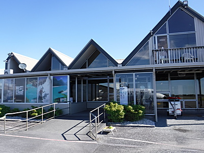
いったんトイレを済ませて表へ出ると、すでに大男のディーン君が待ち構えていて、
「ゴウ！ その赤い帽子じゃ釣りにならないぞ。」
と、豪快に笑って出迎えてくれた。日本を出る時、とても寒くてスワンドライの赤いウールハットをかぶって来たのだった。
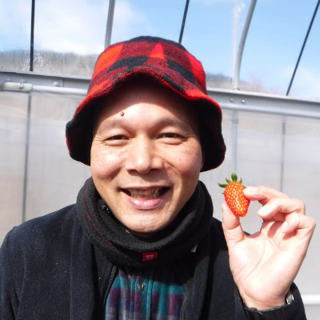
前回、８年前に会った時にも、ディーン君が見違えるほど立派なタフ・ガイになっていて見違えたのだが、今回もあれっ？と見違えた。ちょっと彼も太ったのかもしれなかった。
ディーン君は、ニュージーランドで人気のあるテレビの釣り番組に出演し、番組の司会を務めるグレアム・シンクレア氏をガイドしたとのことだった。南島西海岸の川で、見事シンクレア氏に、11ポンド：約5kgもある大物ブラウントラウトを釣らせることに成功し、その時の写真は、フライラインのコートランド社や、フライロッドのG・ルーミス社の広告になり、雑誌や本のページを飾ったのであった。
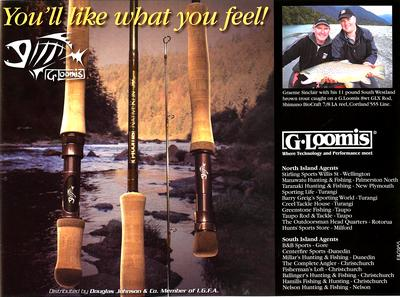
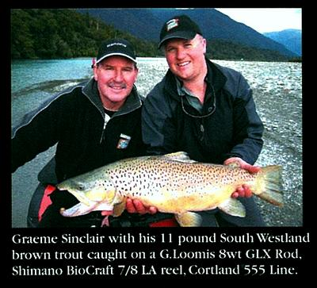
駐車場に停めてある彼の赤いトヨタの四駆ピックアップトラックの向こうに、フィッシュアンドゲームカウンシルのウェストコースト支部の建物が見えた。
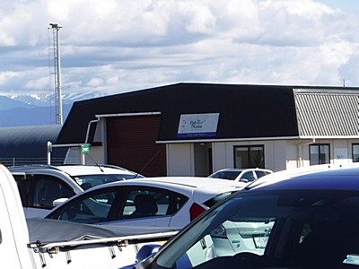
建物脇のバゲージクレームでバックパックを受け取り、トヨタに積み込む。長年預けてあったスペアロッド２本と、オンラインで購入してディーンの家宛てに郵送してあった年間フィッシングライセンスもしっかり持ってきてくれた。天気は快晴！ 明日からの釣りが期待できそうだった。
いざ車が走り出すと、ディーンはとりあえず町の食料品店に行って、明日からの泊まりがけ釣行に必要な食料を買おうと言った。コンビニくらいの大きさの食料品店兼雑貨屋に着くと、彼が、ロッジでの朝食時に食べたいものをみつくろって買っておけよというので、特大箱のシリアル、青色のバナナ、イチゴなどを選んでレジにて購入した。ディーンの言うには、宿は天候に合わせて目的地を変えるため、２カ所を予約してあったそうだ。
買い物の後は、丘の上のブリントさん夫妻宅、ディーンの実家を訪ねることになった。今回の釣行の4日間のどこかで時間を作って夫妻を訪問したかったので、さっそくお２人に会えるのはとても嬉しかった。懐かしいカーブの道を上り、Whitcombe テラスを北へ少し行き、ドライブウェイを下ってガレージ脇に車は入った。奥にはトレーラーに載ったアルミボートがある。お客は僕１人なのだがボートを使ってくれるらしい。デイパックからお土産の品を取り出し、綺麗に刈り込まれた芝生脇の小道を通ってブリントさん宅にお邪魔する。夫妻は夕食の準備の最中だったが、僕が入っていくと、両手を大きく広げてハグして迎えてくれた。８年ぶりの再会である。僕は挨拶もそこそこに、さっそくデイパックから２枚の写真を持ってきてブリントさんに見せて、
「このスプリングクリークは何という名前でしたか？」
と訊ねた。８年前の強烈な思い出が忘れられず、どうしても地図で探して見たかったのだ。
「ああ、ここは今回もディーンが釣れてってくれるぞ。」
とブリントさんは笑った。
『ええっ！ またあそこで釣れるのか！』
僕はとても嬉しく、期待に胸がふくらんだ。
午後６時を過ぎても緯度の高いホキティカの日差しは強い。トロレイ家のダイニングの大きな窓から初夏の日差しがさんさんと照りつけてくる。Tシャツになっても暑いくらいだ。懐かしのテーブルを囲み、自宅裏の野菜畑で収穫されたレタス、トマト、グリーンピースのサラダと茹でポテト、肉フライの夕食をいただく。
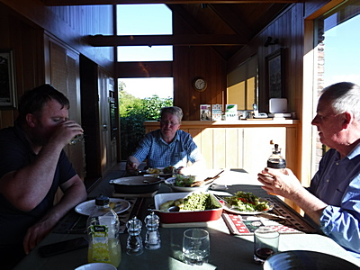
南には遙かにアルプスの峰々が連なり、そのどれかはマウント・クックであるはずだった。青い空、白い雲のたなびく国、ニュージーランドに再び来たのだ。
夕食後、一段落してからお土産の日本手ぬぐいを夫妻に渡す。ブリントさんへの１枚は、全面に魚の名前の漢字がプリントされており、Japanese Kanji Character の左側のパターン：魚偏は共通で、右側のパーツ？がそれぞれの魚種の特徴などを表しています、などと拙い英語で説明するとブリントさんはいたく感心してくれた。
「これがトラウト（鱒）、これがサーモン（鮭）、これはイール（鰻）を意味しています......」
「ほほう！こりゃすごいな。で、君たち日本人はこれらを全て覚えているのかい？」
「いやぁ、僕なんか少ししか判りません。でも学校の国語の先生なら大部分は知っているでしょうね。」
一方、グレースさんへの手ぬぐいは日本調の桜の花びらがプリントされたもので、
「これは部屋の壁に飾っておくことにするわ！」
と喜んでくれた。
美味しい夕食でおなかも満たされ、いよいよディーンとサウス・ウェストランドへの釣行に出かけることとなった。時刻は午後7時。まだまだ明るい。出がけに玄関先で、グレースさんが、
「タケシ、ディーンがあまり激しい釣りをプッシュするようなら遠慮無く言って断るのよ。」
と、気遣って言葉をかけてくれた。僕もいささかトシを食ったのが察せられたのであろう。（笑）
ガレージ脇でボートトレーラーをトヨタの牽引バーにセットし、夫妻に見送れらながらゆっくりと走り出す。さあ出発だ。
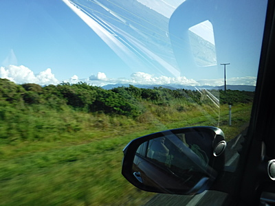
ステートハイウェイ6号線をホキティカからひたすら南下して行く。前回鰐部さんがシーラン・ブラウントラウトを釣った河口を横目で眺めながら高速で橋を渡り、牧場地帯を飛ばして行く。平日でもあり、このあたりでは交通量も少ない。
途中、川のそばにディーンが車を停め、写真を撮していた。ニュージーランドの川にしては珍しくカーブの外側に天然の岩組みで護岸工事が施してあり、ここは洪水でえぐられると道路に被害が出るためだろうなと思われた。
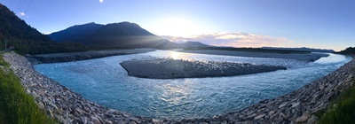
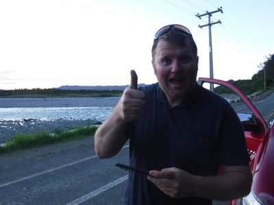
道すがら、ディーンは相変わらずのジョークを交えつつ、２人のお子さんたち、奥さんのアンナさんの近況や、今や本業となった、フィルミング・ビジネスの事などを愉快に話してくれた。彼は中型・大型のビデオカメラ、ドローン各種などを使ったり、ヘリコプターからの空撮で、ウェストランドの貴重で美しい自然を撮影し、色んな会社へ映像素材を販売しているフリーランスのカメラマンなのである。自分の農場や育児が忙しくなってきたため、最近ではフィッシングガイド業の方は、徐々に日数を減らしているとのこと。
「このあたりじゃフィッシングガイドは少ないから、特にネットなんかで営業しなくてもお客はいっぱいだよ。」
と言って笑った。まぁ、ブリントさんがかつて僕に言ったように、ニュージーランドでのフィッシングガイドは「世界一ハードな職業」であるので、フルにガイド業だけを勤めていたら頑健なディーンと言えども体が持たないのであろうと思われた。
２時間ほど走ってフォックスとフランツ・ジョセフの２つの氷河の町を通過し、国道沿いの地味なアコモデーションの駐車場に車を乗り入れ、ディーンは空き地の草むらの奥へとボートトレーラーを停めてから切り離し、トラックだけを１棟のロッジ脇の屋根付き駐車場に駐車した。
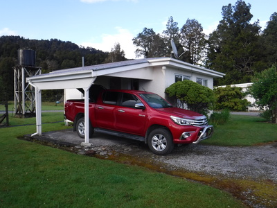
「ここがこれからの宿だぜ」
午後９近くになり、ようやく暮れかかった周辺は実にのんびりした雰囲気である。ディーンがオーナーから鍵を借りてきてドアを開けてくれた。重いバックパック、デイパック、２本のスペアロッド、ディーンの撮影機材の一部、食料品の詰まったクーラーボックスなどなどを部屋に運び込み、ようやく一息ついた。ディーンはさっそく冷凍のミートパイ、グレースさん手作りのミンス（挽肉料理）を電気オーブンに入れ、タイマーをセットして温め始めた。トースターでは、日本の普通のスーパーではあまり見かけない茶褐色の食パンを焼く。
ロッジの間取りは大きなダブルベッドの部屋、シングルベッド２つの部屋、キッチンとダイニング、洗面所とシャワー、トイレという具合で清潔で感じの良いアコモデーションだった。僕がベッド２つの部屋を使うことになり、一方のベッドに荷物を全て取り出して並べた。
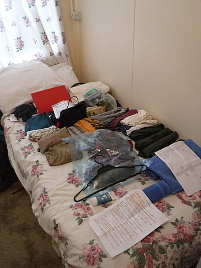
そして、事前に作っておいた釣行時用の持ち物リストに基づいて、フライベストとデイパックとに必要品を詰め直した。薬を飲んでからベッドに入る。僕はホテルなど、自分のベッド以外だと、慣れなくてあまり快適に眠れないのだが、ここのベッドは例外的に寝心地が良く、どっと疲れが出てすぐに眠りに落ちた。
釣行日誌ＮＺ編 目次へ
サイトマップ
ホームへ
お問い合わせ